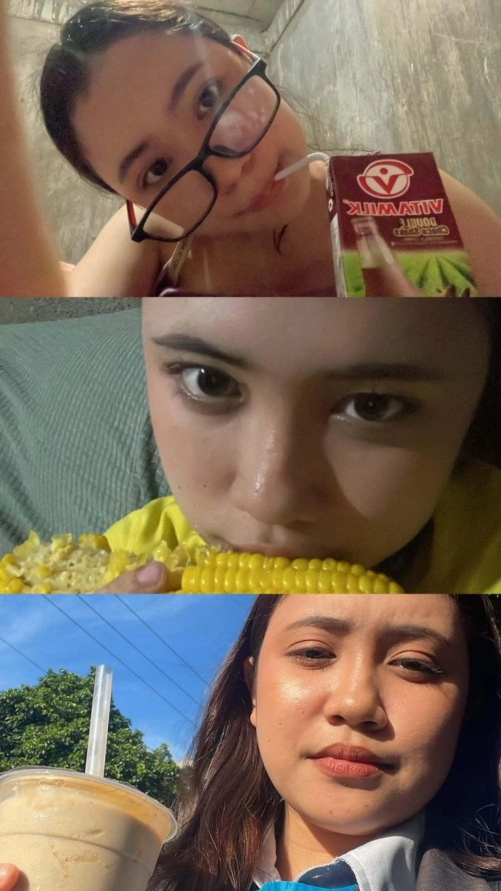

my little food lover
this girl has a special way of making even the simplest parts of her day worth sharing. whether she's enjoying her favorite food or showing me what she's about to eat, there's always something endearing about the way she lets me into these little moments. she's someone who finds happiness in the simple things, and i love how a small part of her day can tell me a little more about her. if there's one thing you should know about her, it's that some of the cutest updates come with a picture of whatever she's eating.